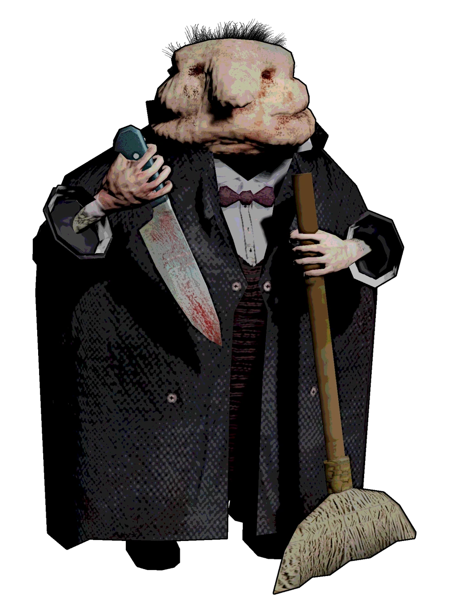

Mythologische Kreaturen der Welt

Mit dieser website werde ich mich mehr mit eher nischen Kreaturen befassen, oder Kreaturen, die nicht direkt in Verbindung kommen mit Religion z.B (Engel oder Dämonen).
Dies ist eine Website, die sich mit mythologischen Kreaturen von kulturen überall um der Erde befasst, zusammenhänge mit echten Tieren oder mögliche Gründe für die Exsistenz erklären und die Kreaturen der Kulturen mit einander vergleichen.